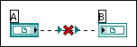
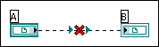

You have wired two or more refnums on the block diagram, but they are different types.
In this example, an application reference and a TCP reference are wired together. Although they look similar on the block diagram, they refer to different objects, and LabVIEW does not allow you to wire them together.
To correct this error, replace one of the refnums so both refnums are the same type.
However, sometimes this error can occur when you wire refnums of seemingly similar type. For example, in the following illustration, two refnums for datalog files are wired, but LabVIEW indicates a refnum conflict.
In this example, the two refnums refer to datalog files that contain different data types. The datalog refnum labeled A contains a cluster that contains a floating-point (fractional) number and a Boolean control. The datalog refnum labeled B contains a cluster that contains a floating-point number and a path. For these two refnums to match, they must refer to datalog files that contain exactly the same type.
If the error is similar to this example, replace the contents of one of the refnums so both clusters match data types.
Differences in data type can sometimes be quite subtle, especially if you are working with clusters. For example, differences in cluster order might not be apparent on the front panel or block diagram, but they cause LabVIEW to think that the types of the two clusters are different. You can view and modify the cluster order by right-clicking the cluster border and selecting Reorder Controls In Cluster from the shortcut menu.
In addition, differences in numeric representations also cause a conflict. For example, wiring a floating-point number datalog to an integer datalog can cause a conflict. Because representation differences might not be obvious from examining the front panel or block diagram, right-click a numeric control and select Representation from the shortcut menu to determine the type.